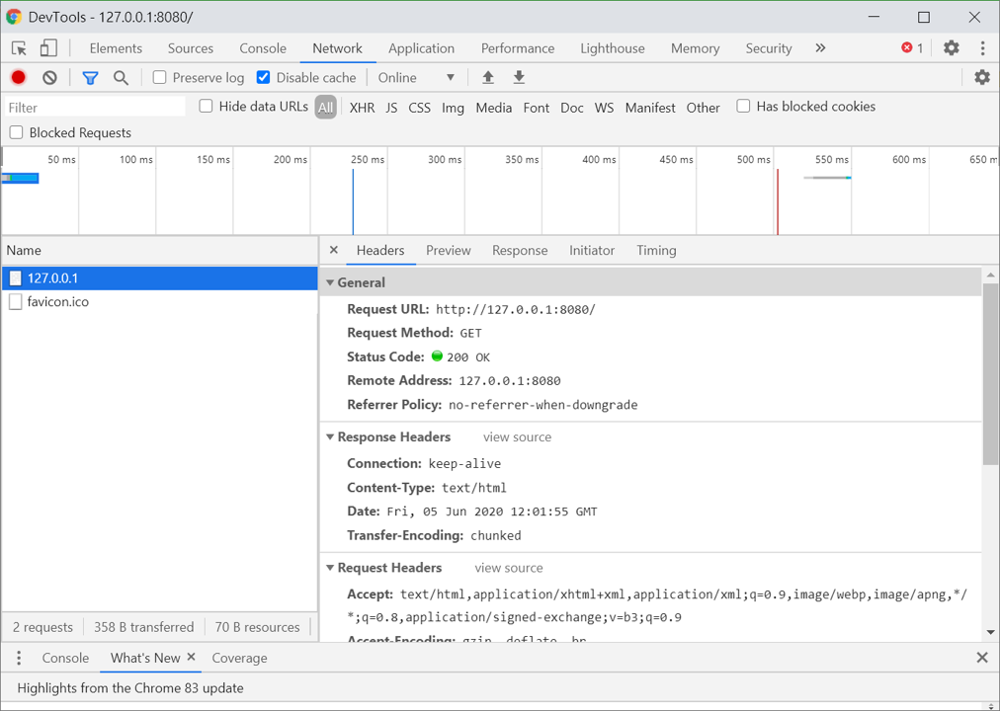

Node.js 基礎學習筆記 - Part 2
Global 全域物件
對應於瀏覽器的 window，在 Node.js 中的全域物件為 Global。雖然概念上雷同，但當你在 Node.js 上想在全域物件下新增一個變數時，請使用以下的寫法。
1 | global.addThis = "Hello!" |
沒辦法像瀏覽器一樣簡單地宣告全域變數，原因在於 Node.js 在設計時，是把每個 JS 檔當成不同的模組 (modules) 來看待，所以不希望各模組的內容可以隨意汙染到全域去。
Require, Module, Exports 模組基礎
在做一個實際的專案時，通常會把數支的 JS 模組載入主程式中，假設目前專案目錄下有一支主檔 app.js，要載入其他模組，會使用語法 require
1 | // 載入另一支位於同層的 JS 檔 |
儘管你的 moduleTest.js 已經寫入內容，只用 require 語法還是會反應為空物件，是因為你還必須在被載入的檔案中加入輸出的語法，有兩種方式：
1 | // 在 moduleTest.js 中，使用 module.exports，寫在物件中的內容就會被傳到 app.js 的 moduleTest 裡 |
1 | // 在 app.js 取用引入的各項資料 |
※ 注意，這兩種方法不可混用，有可能產生蓋掉數值的狀況：
1 | exports.myData = 666; |
核心模組 createServer
在 Node.js 的官網文件上，可以看到其內建的各項模組，其中 HTTP 的模組即是用來建立 web server 的，首先必須引入該模組：
1 | // 引入 HTTP 模組 |
引入後，我們開始使用此模組提供的方法。首先，建立一個網頁伺服器，使用 http.createServer() 方法，此方法會產生一個 HTTP Server 物件，而這個伺服器物件可以監聽電腦的特定連接埠，並且在每次客戶端發起請求時，執行函式 (requestListener)，語法如下：
1 | // 建立一個網頁伺服器 |
- requestListener：
- 當每次請求發出時，伺服器端會執行的函式。會處理客戶端送來的請求，也負責伺服器傳給客戶的回應。
- 此函式是
http.createServer()方法的參數。 - 語法：
function(request, response){}- 第一個參數 request 代表了 IncomingMessage 物件。
- 第二個參數 response 代表了 ServerResponse 物件。
1 | // 寫一個回應給客戶端 |
回應的檔頭也可以設定成 HTML 格式 ，如下：
1 | http.createServer(function(req, res){ |
要查看是否成功，使用瀏覽器存取以下 URL：
- localhost:8080
- 127.0.0.1:8080，此方法會經網卡傳輸，會受到防火牆和網卡的限制
- ※ 為何設定在 8080 連接埠？ 因其為平常較少用的埠號，不能兩個應用程式使用同一個，如果有第二個 Node.js 程式試圖使用 8080 則會被拒絕。其他常用埠號的意義：
- :21 FTP
- :80 HTTP
- :443 HTTPS (加密)
如果使用 Chrome，可以從 DevTools 的 Network 查看：

在 requestListener 函式內寫入的 console.log(req.url)，在用瀏覽器開啟時會回應 / 和 /favicon.ico ，代表客戶端進入的是首頁，同時還有取網站圖示 (favicon) 的行為。